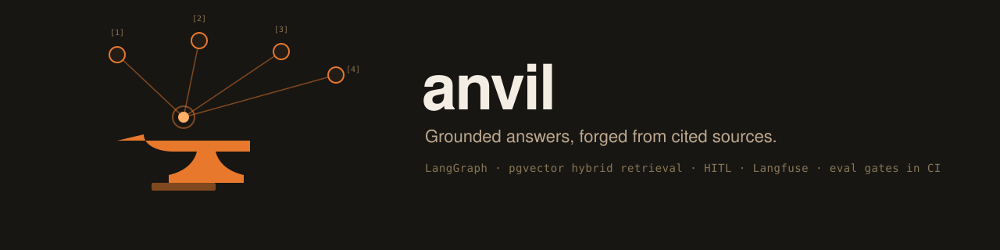

0.5673
recall@5
Grounded answers, forged from cited sources.
Support agents fail quietly: they hallucinate answers, cite nothing, call the wrong tool, or post things nobody approved. Anvil is a support agent over the real FastAPI documentation, built evals first, so every one of those failure modes is a number CI can watch. Point the ingestion at any markdown docs tree, rebuild the goldens, and the same measurement system holds.

source: anvil eval retrieval · 52 real user questions (Stack Overflow + GitHub issues) over 1,199 chunks of the real FastAPI docs · hybrid search + cross-encoder rerank, fallback embedder all-MiniLM-L6-v2 (the keyless CI arm)
A LangGraph agent with a SQLite checkpointer, budget guards on every run, and a hard write boundary. Retrieval is hybrid: Postgres full-text and pgvector cosine each return 50 candidates, Reciprocal Rank Fusion merges them, and a cross-encoder reranks the top 25 on CPU. The top rerank score doubles as a grounding-confidence signal.
claude-haiku-4-5 classifies the message: question, action, or smalltalk.
FTS + pgvector, RRF fusion, then ms-marco-MiniLM-L-6-v2 cross-encoder rerank. Heading-aware chunks give citation targets like tutorial-cors#use-corsmiddleware.
Above the confidence threshold, claude-sonnet-5 answers with citations required. Below it, a deterministic refusal fires without spending an LLM call.
get_github_issue fetches live issues; draft_issue_comment is held behind a LangGraph HITL interrupt until a human approves. Nothing is ever posted to GitHub from this codebase.
anvil gate compares every eval run against a committed baseline and exits nonzero when any metric drops more than 0.02. CI runs it on every push.
# hybrid + cross-encoder rerank, 52-query golden set recall@5 0.5673 recall@10 0.7404 MRR 0.5658 nDCG@10 0.5847 # fusion-only (no reranker), same 52 queries recall@5 0.4615 recall@10 0.6250 MRR 0.4077 nDCG@10 0.4385 # reranker is worth ~10 recall points at k=5 # and ~15 MRR points on this corpus
Two layers plus a gate, and the numbers are deliberately unglamorous. The questions are real (vague titles, error messages, XY problems) and the corpus is real (1,199 chunks with heavy topical overlap), so the scores are what retrieval actually looks like before you tune it, measured honestly, with a gate that catches regressions from here.
52 golden queries: 45 mined from Stack Overflow titles, 7 from FastAPI GitHub issues, each carrying its source URL. Relevant chunks labeled by inspection; every label is validated against the ingested corpus first, so a renamed heading fails loudly.
42 golden conversations: 16 grounded answers with expected citations, 10 refusals on questions the docs genuinely cannot answer, 10 GitHub-issue lookups with expected arguments, 5 HITL comment drafts (approve and reject paths), 1 smalltalk. Deterministic checks first, then a claude-sonnet-5 judge scores faithfulness and relevancy.
GitHub Actions runs lint, the 50-test suite, ingestion, the keyless retrieval eval, and anvil gate on every push. A regression past tolerance goes red.
# rank-1 rerank score distributions, real data answerable (52): median 4.4, 5 of 52 below 0 known gaps (10): range -9.7 to 4.6, 4 of 10 below 0 deterministic threshold: 0.0 (the cross-encoder's own relevance boundary) # the populations overlap; 3 of 10 gap questions # score above threshold and rely on the # prompt-layer refusal. two layers by design.
Every LLM call writes node, model, and exact token counts to a JSONL ledger, so anvil report prints cost per conversation from counted tokens, not a guess.
A stdio MCP server (anvil-mcp) exposes search_docs and get_github_issue against the same backend; comment drafts stay agent-only because they belong behind the HITL interrupt.
Generation is provider-agnostic through init_chat_model: Anthropic by default, or set ANVIL_ANSWER_MODEL to an openai:, google_genai:, or other provider-qualified model.
The committed corpus snapshot (118 pages of the FastAPI docs at a pinned commit) means no network and no API keys are needed for any of this.
$ docker compose up -d postgres $ uv sync $ uv run anvil ingest --embedder fallback # keyless; --embedder openai with a key $ uv run anvil eval retrieval --embedder fallback $ uv run anvil gate $ uv run pytest # 50 tests # with ANTHROPIC_API_KEY set: $ uv run anvil ask "How do I enable CORS?" $ uv run anvil chat $ uv run anvil eval agent $ uv run anvil report
draft_issue_comment records and resolves drafts but never posts to GitHub; wiring the authenticated post-after-approval call is deliberately out of scope.eval_results/ exists so any label can be audited against its source URL.This section is not small print. A retrieval number without its failure modes is an advert, and this page is a datasheet.